- 1 Introduction
- 2 New project
- 3 The classes
- 4 Utils class
- 5 Category enum
- 6 Product class
- 7 Main class again
- 8 Your first breakpoint
- 9 The debug window
- 10 Advancing execution
- 11 Stepping over code
- 12 Stepping into code
- 13 Resuming the program
- 14 Evaluating expressions
- 15 Adding watches
- 16 Conditional break-point
- 17 End note
Welcome to debugging in Java with IntelliJ Idea
This tutorial will introduce the debugging tool in IntelliJ.
The debugging tool is super powerful, and you will spend much of your professional career using it.
This tutorial is meant as a simple introduction, but should be enough to get you going.
You can't really break anything using the debugger, so I encourage you to play around with it quite often, so that you get intimately comfortable.
Generalization
The tutorial can be used for other IDEs as well,
though some descriptions or images will not match, e.g. in Eclipse.
All modern IDEs have some built in debugging tool, so, conceptually, the ideas presented here should be transferable to your preferred IDE.
The same code can be used. The Java version should not be relevant.
New Project
First, you will need a new Java project. Or a folder in an existing, it's not all that important.
I assume you create a new project, set it up as usual, have a package with a class, containing a main method.
For example like this:
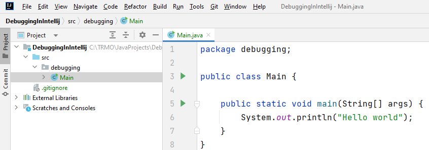
Notice project structure on the left, and the initial code on the right.
You should be able to run the main method, and get a print out. Just to make sure things are set up correctly.
The Example Classes
The code introduced over the next few slides is what we will use for this example. There are four classes:
- Category
- Product
- Program
- Utils
The application is about products and calculating prices, nothing too fancy.
Create Utils class
Inside your new project, create a class called Utils, it looks like this:
public class Utils
{
private static final double vatGrocery = 0.07;
private static final double vatNormal = 0.19;
public static double calculateVat(double price, Category category)
{
double result;
if (category == Category.GROCERY)
result = price * vatGrocery;
else
result = price * vatNormal;
return result;
}
public static double calculatePriceWithVat(double price, Category category)
{
var priceVat = price + calculateVat(price, category);
return priceVat;
}
}
It is not currently important what the code does, we will step through it and investigate, when we start the debugging.
The class depends on a Category, and your code does not compile, so we will create that next.
Create Category
The Category is just an enum (read more here), i.e. a fixed list of values.
Create a new class/enum, called Category in the same package as the other two classes (Main, Utils).
The code looks like this:
public enum Category {
ELECTRONICS,
GROCERY,
CLOTHES
}
Notice the enum type, instead of class, in the first line.
We now have a type called Category, with a set of possible values: [electronics, grocery, clothes].
The convention is to all upper case enum value names.
Your code should now compile again, now that the Utils knows about a Category.
Notice
When creating a new class, you can actually select it to be an enum:
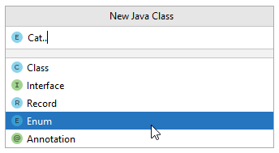
Or, you can just create a normal class, and change our class with enum.
Product Class
Now we need the Product class, so we can calculate some prices, and taxes, and stuff.
Create a new class called Product, in the same package as the rest.
The code looks like this:
public class Product
{
private String name;
private Category category;
private double price;
public Product(String name, Category category, double price)
{
this.name = name;
this.category = category;
this.price = price;
}
public String getName() {
return name;
}
public Category getCategory() {
return category;
}
public double getPrice() {
return price;
}
}
The Program
Finally, we need to update the Main class, to contain a bit of functionality, we can run.
You need to modify the code to look like this:
public class Main {
public static void main(String[] args) {
showPricesWithVat();
}
private static void showPricesWithVat() {
System.out.println("Product prices incl. VAT:");
for (Product product : products) {
double vat = Utils.calculateVat(product.getPrice(), product.getCategory());
double priceWithVat = Math.round(product.getPrice()+ vat);
System.out.println(product.getName() + ": " + priceWithVat + " EUR");
}
}
private static final List<Product> products = new ArrayList<>(Arrays.asList(
new Product("Batteries", Category.ELECTRONICS, 2.50),
new Product("SD Card", Category.ELECTRONICS, 10),
new Product("T-shirt", Category.ELECTRONICS, 15),
new Product("Parmesan Cheese", Category.GROCERY, 7.50),
new Product("Tomatoes", Category.GROCERY, 2))
);
}
Overall, we have three parts/sections in this code.
First, lines 3-5, this is the main method, it just calls the showPricesWithVat method.
Then, lines 7-15, this is the method which will display products and their prices, the main functionality of our tiny program.
It loops through a list of 5 products, which is defined at the bottom of the class, lines 17-23.
Test run
Your program should compile, and you should be able to run it.
This should produce the following output to the console:
Product prices incl. VAT:
Batteries: 3.0 EUR
SD Card: 12.0 EUR
T-shirt: 18.0 EUR
Parmesan Cheese: 8.0 EUR
Tomatoes: 2.0 EUR
Breakpoints
Breakpoints are placed next to lines of code. When running your program in debug mode (shown later), your program will pause execution at the break point, and you can inspect all kinds of information.
Now, suppose we don't like the numbers being calculated, maybe we suspect an error, and we want to understand how the calculations are made by debugging our program.
Setting a breakpoint
A breakpoint is placed in the gutter.
This is the area just to the right of the line numbers in a class, see below.
A breakpoint is a small red dot (( )).
You can theoretically place as many breakpoints, as you wish, all over your program.
A breakpoint is removed by clicking it again.
In our program, all calculation results are shown by
the ShowPricesWithVat method, so, let's put a
breakpoint on the first line of this method,
and run the program in debug mode, like so:
Notice the red dot in the gutter in the gif below.
Then see how the debugging is started by running the program using the little bug button, next to the play button.
Finally, when the code execution hits the line with the breakpoint, the execution is paused, and the line is highlighted.
See this gif:
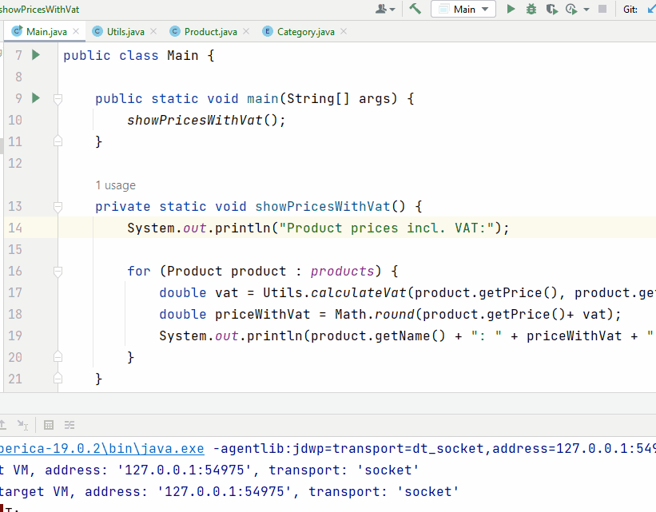
Now, give it a go yourself.
Let the program execution be paused here, and go to the next slide.
The Debug Window
After we start debugging, the program stops at the breakpoint. To examine the state of the paused program, we use the Debug window.
This window contains all kinds of information:
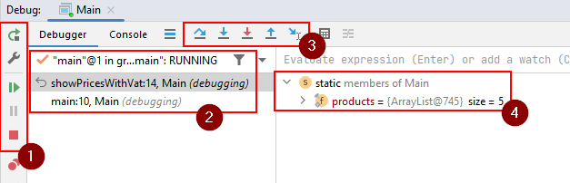
The debug window should automatically appear at the bottom of IntelliJ, when you run the program in debug mode, and hit a breakpoint.
- Here we have a few buttons, the relevant are from the top:
- Curved green arrow: restart program
- Green play arrow: resume program from where it is currently pause
- Grey pause icon: if your program is running, you can press this button to pause at the current execution point.
- Red square: terminate program
- At the bottom, the two red dots, this will show a list of all your breakpoints.
- The call stack. I.e. which method has called which method, which has then called another method. Basically you can see the trace of methods called to arrive at the current location. In this case we can see the
mainhas calledshowPricesWithVat. - The debugging tools, used to navigate and control execution of your code. They will be introduced over the next few slides.
- The various variables and their values, known at the current breakpoint.
While still paused, go to the next slide.
Advancing Code Execution
During debugging we often step through the program one line at a time to examine the program state at various execution points. This is the bread and butter of debuggin.
There are two main ways you can step through the code:
Step OverF8 : if you're not interested in the method, the debugger will execute the call and stop at the next statement after the method call.Step IntoF7 : if paused at a line of code which calls a method, you will step inside the method and stop at the beginning of this method.
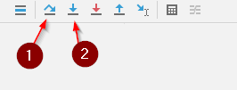
We'll take a look at both shortly.
Stepping Over Code
Run your program again, with debugging, it should pause at the break-point here:
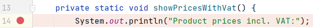
Let's begin with stepping over the Utils.calculateVat(...) method in the for-loop.
We will pause in line 19, i.e. the next print-out, and inspect the information.
It looks like this:
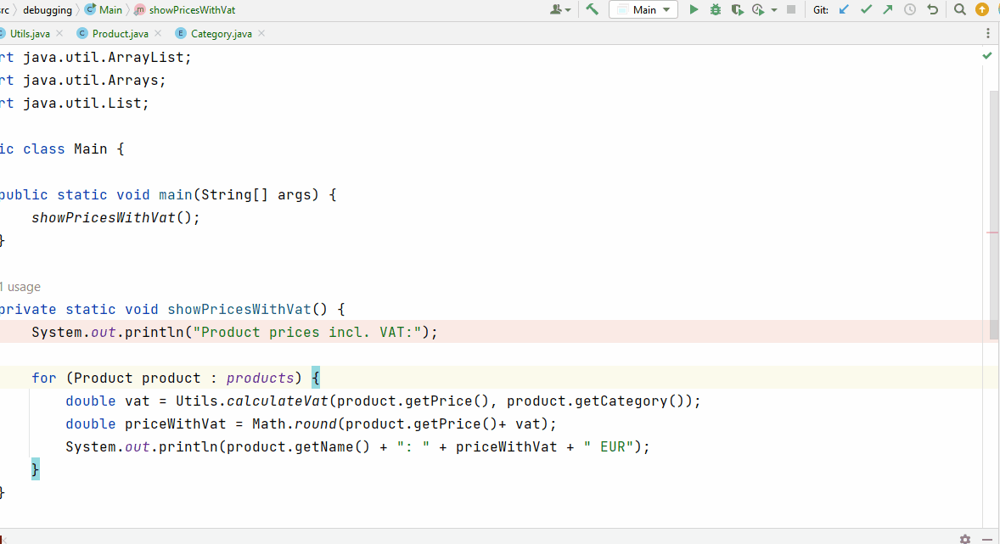
These are the steps shown:
- Program started with debugging, i.e. the little bug-button
- Program stops execution at break-point
- The execution is advanced one line at a time with the Step Over button.
- After line 17, we can see the value of the
vatvariable: 0.475 - After line 18, we can see the value of the
priceWithVatvariable: 3.0 - Both the values are shown next to the line of code, and also in the inspector at the bottom.
- We can also inspect the specific
productinstance, we are currently working with. It is the "Batteries"
Here is the information, when the program is paused at line 19:
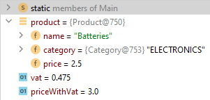
Stepping Into Code
Stepping into code is used when you want to enter the method at the current line of execution, and pause inside that method.
E.g. if you are paused here, at line 17, and want to see what happens inside Utils.calculateVat(..), you will use the Step Into button.
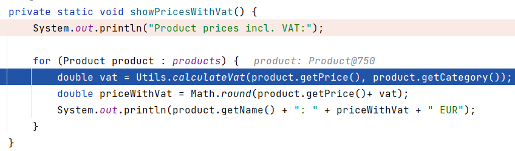
Let's try. Rerun the program, with debugging. It pauses at line 14 (or you can remove the current break-point, and create a new), step over until the execution is paused at line 17. As shown above.
Now, we want to Step Into, which means we enter the method calculateVat, and continue from its beginning.
When paused at line 17, press the button, or F7:
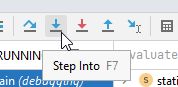
I had to press it twice, first it highlighed the method, then at second press, it entered the method.
The execution is now paused here:
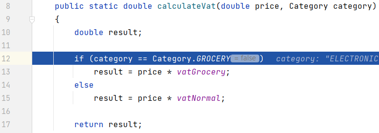
Now, inspect the values in the inspector at the bottom, as you Step Over until execution exits the method again.
Resuming the Program
At any time, you can resume program execution. The program will run till the next breakpoint, if any.
E.g. if you have a loop with several lines of code, and your are looking for something specific after a couple of iterations, maybe you don't want to use step-over all the way. Put a break point at the beginning of the loop, and use Resume Program to iterate through loops.
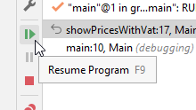
Let's try it out.
Terminate your program.
Remove your break-points.
Create a new break-point inside calculateVat(), here:
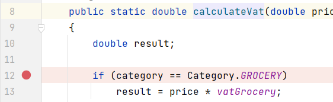
Run your program, it should pause the your break-point.
When you click Resume Program, execution stops here again, but this time it is for the second product.
I.e. the second iteration of the for-loop. Pressing Resume Program again pauses at this line again, now for the third product.
Evaluating Expressions
During debugging, you can evaluate any expression in the context of the current execution point. By "evaluate", I mean "run code".
Say, we want to evaluate the insides of our if-block:
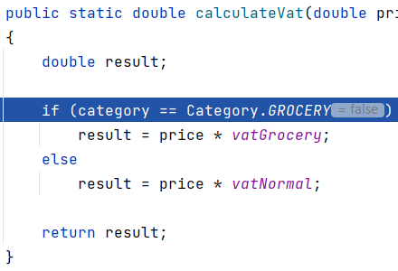
We can select parts of the code and use the Evaluate expression feature to execute that piece of code, like this:
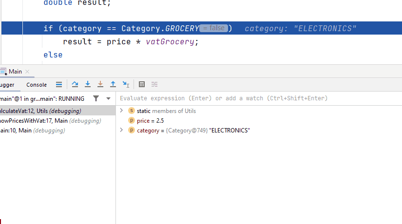
You can either use the pop-up window, or the input field in the inspector.
Alternatively, you can hold down alt and click on parts of your code for evaluation. Below, alt is held down. Notice the underline indicating what code is executed, when clicking on it:
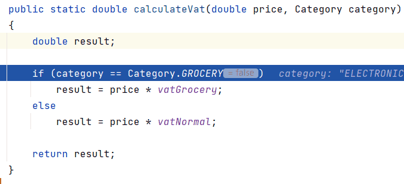
Adding Watches
If you're interested in how a particular expression changes during program execution, you can add it as a watch. Either a variable, or an expression.
By default, watches are shown together with local variables in the debugging inspector, and updated (if needed) at each step through the application.
Let's add our expression to watches, we can then see how it changes through executions:
- Select the expression
category == Category.Grocery. - In the context menu (right click), select Add to Watches. Or create a watch manually, see below. Notice the glasses icon next to your watch.
- Press F9 or click the Resume Program button in the Debug window.
- Notice how the watched value changes.
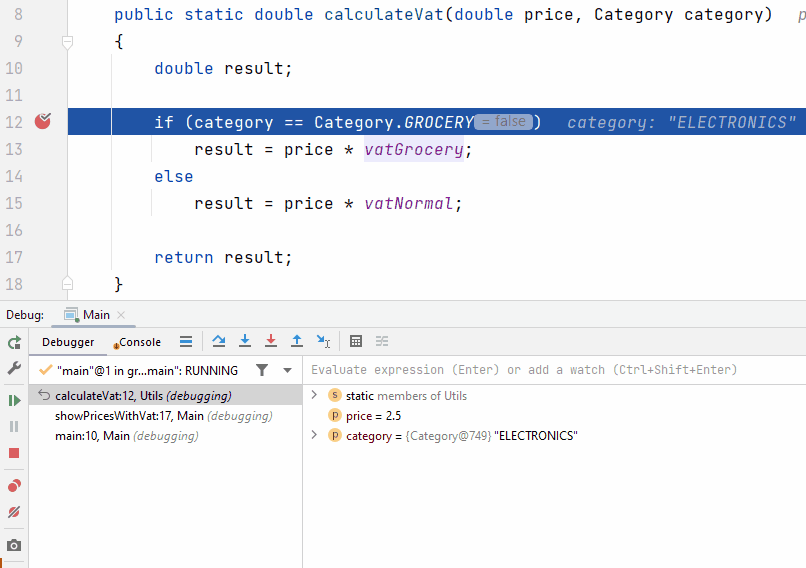
Conditional Break-Point
Sometimes, you have a problem with a specific element in a list, and the faulty code is in a for-loop.
You go debugging, place a break-point in the for-loop, and press Resume Program until the correct element is active.
If there are many elements in the list, it will take a long time to get to the correct element.\
Example: In our case, we want to inspect the calculation for "Parmesan Cheese", i.e. the fifth element in the list.
I could put a break-point at line 17 in the Main class, i.e. the first line inside the for-loop, and just Resume Program until "Parmesan Cheese" product is active.
But this could take time.
I have previously hacked this by creating an if-statement, like this:
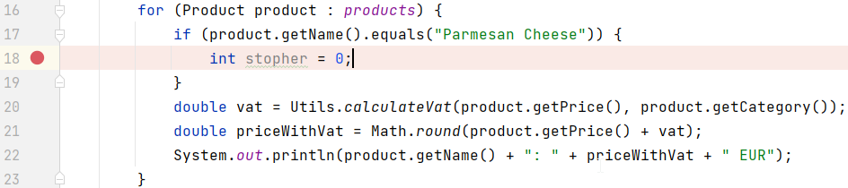
It does work, it will pause execution when product is the "Parmesan Cheese".
But it is not particularly pretty, and you may forget to clean up.
It is better to create a conditional break-point.
You do this by creating a normal break-point, and right-clicking it.
Now you can insert a condition:
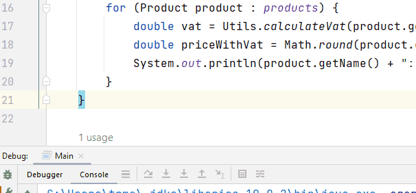
The End
That was the introduction to debugging. This guide is not extensive, but should be enough to get your started on your debugging-journey. This is a common tool available in all modern IDEs, across most programming languages.
Whenever your code does not behave as expected, you should probably start debugging. Put break points before the affected area, and step through the code, inspecting values along the way, until you find something specific.
You will probably often encounter null-pointer exceptions when doing exercises and projects. The exception stack trace should tell you which line of code in which class produce the exception. Put a breakpoint at that line or a few lines before, to inspect what happens up to the expcetion.
Debugging is a powerful tool, and an entire skillset in itself. Mastering this tool is very important.